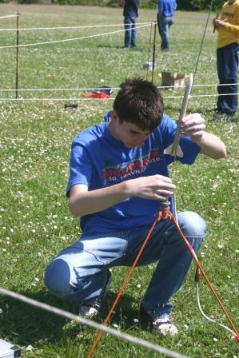
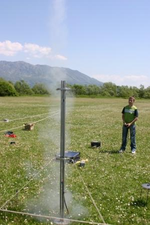

Unutar Hrvatske zajednice tehničke kulture, Hrvatski astronautički i raketni savez (HARS), od svojeg utemeljenja 1967. godine povezuje članice - organizacije, klubove, sekcije i pojedince aktiviste, kojima je posebno područje interesa unutar tehničke kulture astronautika, raketna tehnika i raketno modelarstvo. Članovi HARS-a su klubovi iz Obrovca, Čakovca, Zagreba, Zadra, Vinkovaca, Garešnice, Nove Rače i dr. Tehničke aktivnosti Saveza odvijaju se na dvije razine: popularizacijskoj i praktičnoj, sa sadržajima primjerenim zreloj populaciji, mladima i djeci. Svake godine, HARS je organizator dviju astronautičkih manifestacija, pod nazivom „Mjesec astronautike“ i „Svemirske večeri“, koje se održavaju u različitim gradovima, širom Hrvatske. Manifestacije se sastoje od prigodnih izložbi, vezanih za istraživanje svemira, tehnologije i razvoja svemirskih letjelica te drugih najnovijih događanja u području astronautike.
 Smotra raketne tehnike Hrvatskog astronautičkog i raketnog saveza održava se jednom godišnje i ima međunarodni karakter. Ona je karakterizirana međunarodnim prezentacijama dostignuća u amaterskoj raketnoj tehnici, a po složenosti tehničkih elemenata raketa orijentirana je prema odrasloj populaciji. Najšira aktivnost, usmjerena prije svega prema djeci i mladeži, svakako je raketno modelarstvo (nacionalne kategorije), izrada „show“ modela i maketa. Takva aktivnost predstavlja uvod u stjecanje tehničkih znanja (aerodinamike, tehnologije, balistike, pogona i sl.) mladih tehničara, koji će se odrastanjem, s punim znanjem posvetiti amaterskoj raketnoj tehnici. U sklopu ove aktivnosti, godišnje se održava čitav niz natjecanja u raketnom modelarstvu za djecu i mlade diljem Hrvatske. U isto vrijeme, najmanje jednom godišnje, HARS organizira posebne tečajeve za nastavnike tehničkog odgoja, instruktore, voditelje i suce, kojima se proširuje baza za školovanje novih mladih tehničkih kadrova u području raketnog modelarstva i raketne tehnike. Međunarodna aktivnost Hrvatskog astronautičkog i raketnog saveza odvija se preko IAF-a (Međunarodne astronautičke federacije) čiji je HARS punopravni član.